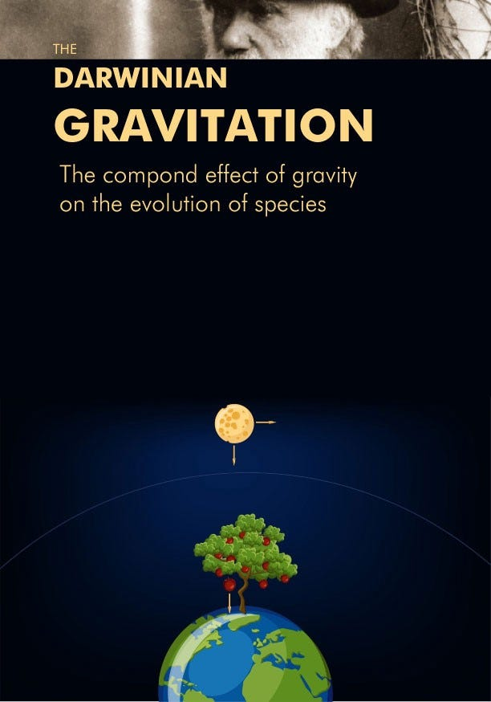

The art of Out marketing

Every successful startup is the starting point of an out marketer that knows how to out-market with a startup virus.
a viral startup is this startup that infects your startup or company using all its resources for growing faster than yours while spending nothing. its fatality is very high because it makes yours go out of business rapidly and often it lets yours live while it has all the predisposition to shut it down leaving you with no time frame for reacting. The art of war is not the same as the art of Out marketing but they do have many things in common that make some people think that business is like a war and a competitive space while it is not that. it is already proven by history, theory, and practice that Skilly companies always out market competitive ones, and mother wild taught us how one creature can embed itself one another and profit hugely and killing it faster and grateful we are for those who work hard to protect us from these kinds of creatures. Seems a pretty good reward for them to know how to build a viral startup by out marketing.
be careful because Your marketing effort can be this feature that amplifies the marketing effort of the company of this out marketer that will make yours out of business quickly because this out marketer knows that nobody buys nothing everyone is just telling a story while willing and being eager to hear the one they want to listen, see and live. This out marketer knows that the important skill is to know the story that others are seeking and how to deliver this story really to them using the medium that is easier and cheaper while the story once delivered provides way more benefit than what the receiver was expecting to get from.
I have not read it but The art of possibility is very likely a great book from an author I know and would read because this article is about art and a bit about war I thought it was an opportunity to talk about an author I know. Doing this generous introduction of an author I care about reminded me of my book about GameStop the anatomy of a stock short bubble that you can get here by providing your email and it is sure that not everybody will get one and it will be a new kind of way of publishing and experiencing a book. Here for signup
The author I talk about is Here (search engine idea)

